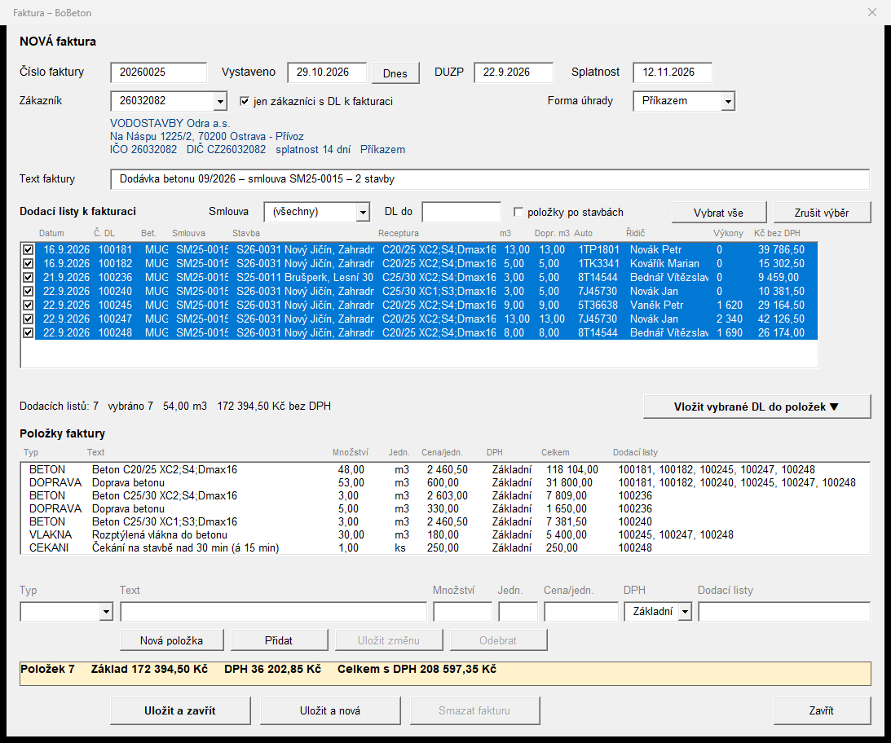
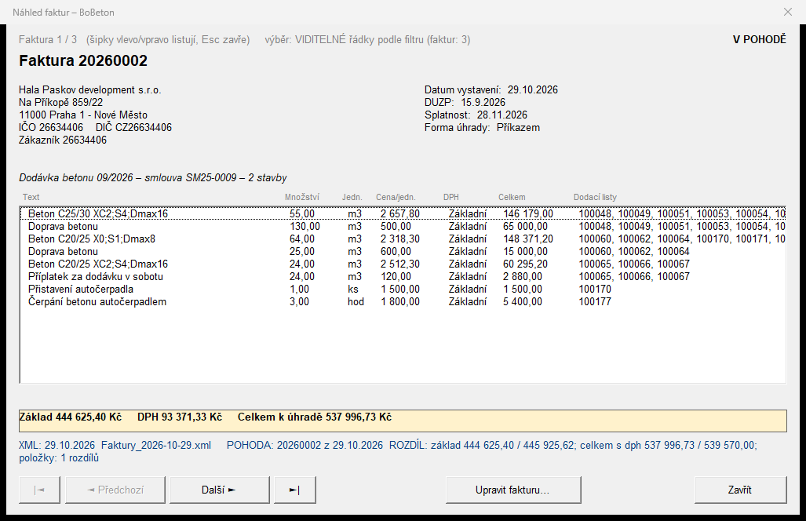
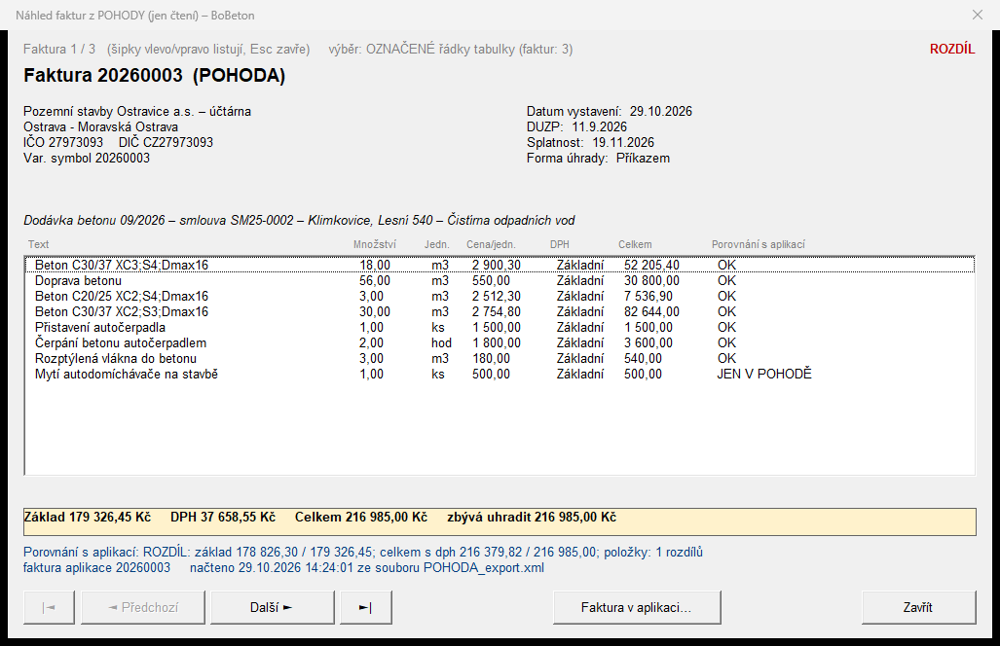
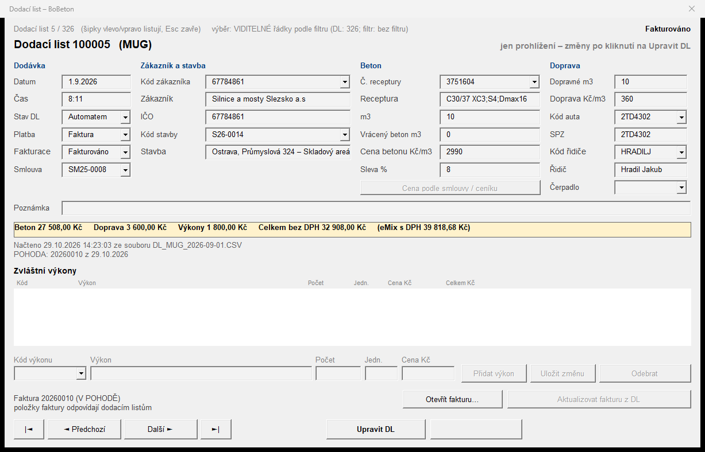
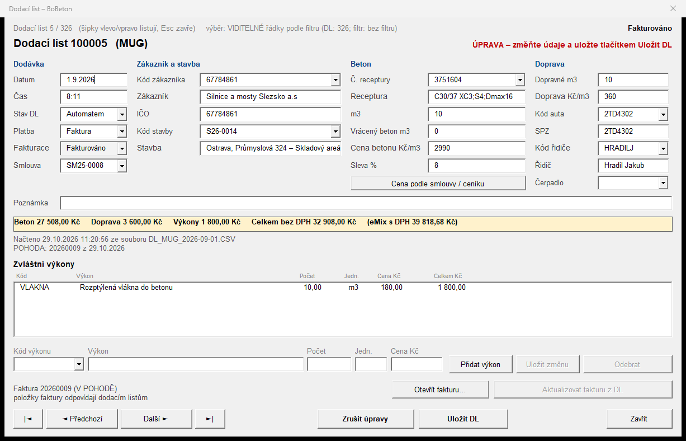

Formuláře
Dialogová okna aplikace (snímky z uživatelského návodu, ukázková data).
Faktura – nová / úprava faktury

Náhled faktur

Náhled faktur z POHODY (jen čtení)

Náhled dodacího listu

Úprava dodacího listu
